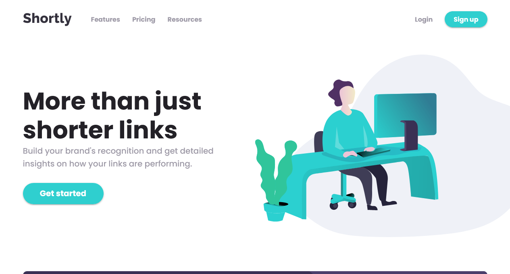

Websites
-

Shorty, is a url shortening application that uses shrtco API to generate short url for the provided long url. With the possibility to log in and manage your short urls. (The API takes a while to respond the first time)
-
A react application to view the details of countries (population, capital, domain, etc...). Data is fetched from REST countries API.
-
Small web application that allows users to generate random advices. Advices are fetched from the advice slip API. (The API has un anti-spam protection)
-
A single page application created with vanilla JavaScript that helps computer science students of UMBB university to calculate their mean.
You can find more of my projects on Frontend Mentor and Github .